Lecture & filtrage de fichiers
قراءة الملفات وتصفيتها
الشرح بالعربية
cat للعرض والدمج، head/tail لأول/آخر 10 أسطر (-n للعدد)، cut لاستخراج الحقول (-d الفاصل، -f الحقل) أو المحارف (-c)، sort للترتيب (-n رقمي، -r عكسي)، uniq لإزالة التكرار المتتالي (-c للعد)، wc للعد (-l أسطر، -w كلمات، -c محارف)، tr للترجمة/الحذف، diff للمقارنة، paste للدمج، echo للطباعة، which لمسار أمر. تُركّب عادة مع الأنابيب.
Illustrations de la leçon
14 planches · cliquez pour agrandir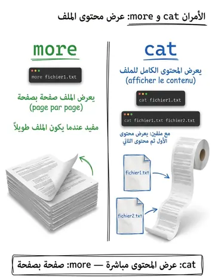
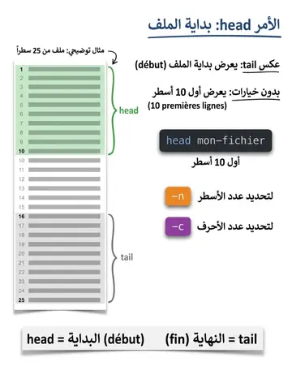
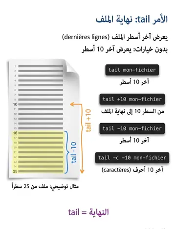
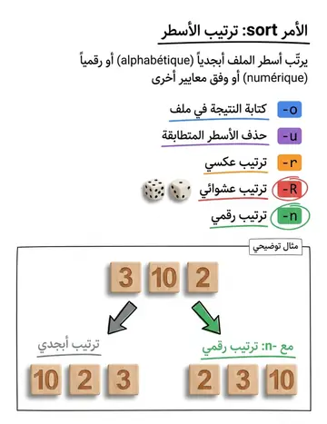
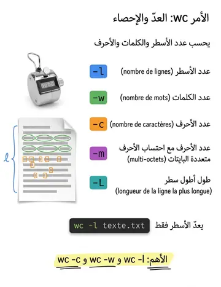
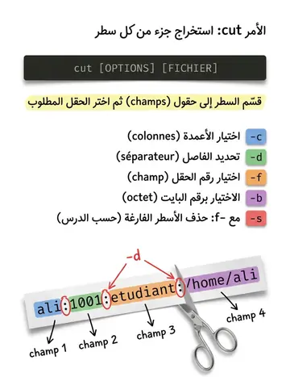
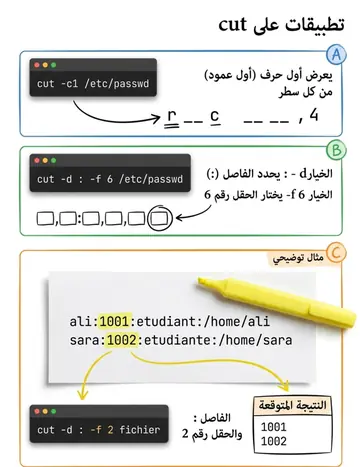
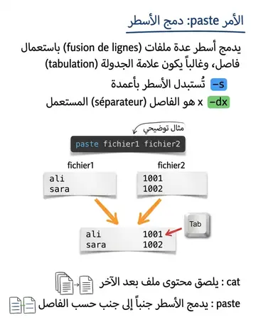
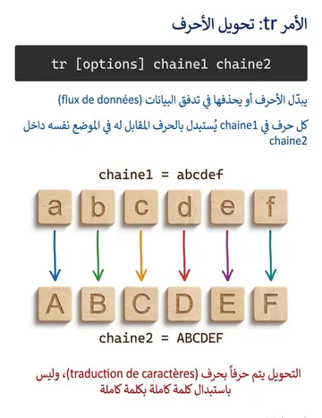
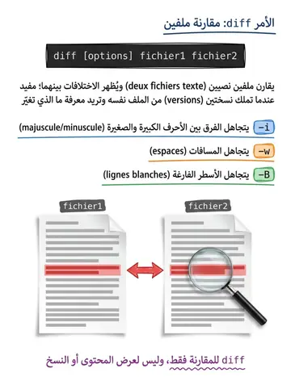
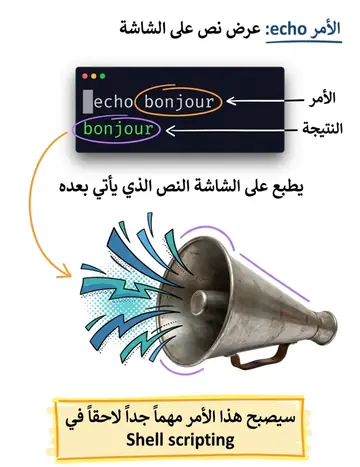
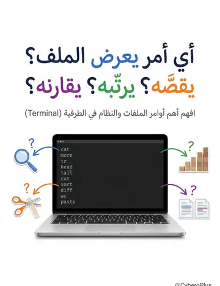
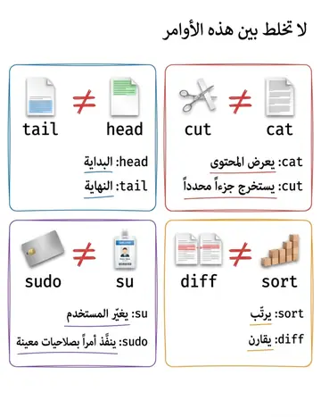
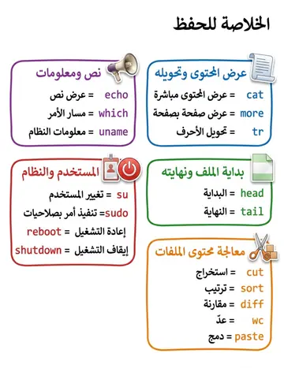
Contenu de la leçon
Le cours en français, avec les termes techniques et les exemples.
Commande : cat Nom_du_fichier
Afficher le contenu d’un fichier user@pc :~$
catfichier1.txt
Bonjour tout le monde, je suis très …;
user@pc :~$ cat fichier1.txt fichier2.txt
Bonjour tout le monde, je suis très …;
Voila le contenu de dexime fichier user@pc :~$ more fichier1.txt (Affichage page par page)
COMMANDE DE MANIPULATION DES
FICHIERS
COMMANDE DE MANIPULATION DES
FICHIERS
Commande : tr [options] chaine1 chaine2
Permet de transposer ou éliminer des caractères dans un fichier ou dans un flux de données. Autrement dit, un caractère appartenant à chaine1 est remplacé par le caractère de même position dans chaine2.
COMMANDE DE MANIPULATION DES
FICHIERS
Commande : tr [options] chaine1 chaine2
Permet de transposer ou éliminer des caractères dans un fichier ou dans un flux de données. Autrement dit, un caractère appartenant à chaine1 est remplacé par le caractère de même position dans chaine2.
La commande tr est utilisée ici pour traduire des caractères. Dans cet exemple, tous les caractères de a à f (minuscules) dans le texte d'entrée sont remplacés par leurs équivalents en majuscules (A à F).
Commande : tail [OPTIONS] [FICHIER]
Permet d'afficher les dernières lignes d'un fichier. Par défaut, elle montre les 10 dernières lignes.
Exemple :
$tail +10 mon-fichierToutes les lignes du fichier de la 10eme jusqu'à la fin.
$tail -10 mon-fichierLes 10 dernières lignes à partir de la fin.
$tail -c -10 mon-fichierLes 10 derniers caractères du fichier.
COMMANDE DE MANIPULATION DES
FICHIERS
COMMANDE DE MANIPULATION DES
FICHIERS
Commande : head [OPTIONS] [FICHIER]
Afficher les premières lignes d'un fichier. Par défaut, elle affiche les 10 premières lignes.
Exemple :
$head-n +10 mon-fichier
Toutes les lignes du fichier de la 10eme jusqu’au début.
$head-n -10 mon-fichier
Les 10 premières lignes à partir de la fin.
$head-n 10 -c mon-fichier
Les 10 premiers caractères du fichier.
Commande : cut [OPTIONS] [FICHIER]
Permet d'extraire des sections spécifiques d'un fichier texte, souvent utilisée pour manipuler et traiter des fichiers de données structures.
COMMANDE DE MANIPULATION DES
FICHIERS
Option
Description
-c
Permet de sélectionner les colonnes.
-d
Permet de spécifier un séparateur de champs
-f
Indique le numéro du ou des champs à couper
-b
Sélection sur le numéro d’octet
-s (avec –f)
Supprime les lignes vides .
Commande : cut [OPTIONS] [FICHIER]
Exemple :
cut -c1 /etc/passwdAffichera le premier caractère (colonne) du fichier /etc/passwd.
cut –d : -f 6 /etc/passwd(avec séparateur de champs)
Affichera le 6eme champ du fichier /etc/passwd, dont le séparateur de champs est le caractére double point (”:").
COMMANDE DE MANIPULATION DES
FICHIERS
Commande : sort [OPTIONS] [FICHIER]
Permet de trier les lignes d'un fichier texte selon différents critères comme l'ordre alphabétique, numérique, ou basé sur des champs spécifiques.
Syntaxe :
sort[-o|-n|-r|-R|-u] [nom_fichier]
COMMANDE DE MANIPULATION DES
FICHIERS
Option
Signification
-o
Ecrire le résultat dans un fichier
-u
Elimine les lignes identiques
-r
Trier en ordre inverse
-R
Trier aléatoirement
-n
Trier des nombres
Commande : diff [options] fichier1 fichier2
Permet de comparer deux fichiers textes. Elle affiche les différences entre ces fichiers, ce qui est particulièrement utile pour voir les modifications apportées à un fichier ou pour vérifier les différences entre deux versions d'un document.
COMMANDE DE MANIPULATION DES
FICHIERS
Option
Signification
-i
Ne fait pas de différence entre les caractères minuscules et majuscules.
-w
Ne tient pas compte du caractère espace.
-B
Ne tient pas compte des lignes blanches.
Commande : wc
Permet de compter le nombre de ligne d'un fichier, mais aussi le nombre de mot ou de caractères.
Options courantes
-l : Compte uniquement le nombre de lignes.
-w : Compte uniquement le nombre de mots.
-c : Compte uniquement le nombre de caractères.
-m : Compte le nombre de caractères (en tenant compte des caractères multioctets, si applicable).
-L : Affiche la longueur de la ligne la plus longue.
COMMANDE DE MANIPULATION DES
FICHIERS
Commande : paste
Permet la fusion de lignes de fichiers. Elle permet de concaténer les lignes de fichiers en les séparant par un délimiteur, généralement une tabulation.
Options courantes
-s
: Les lignes sont remplacées par des colonnes
-dx : Le caractère x définit le séparateur de champ
COMMANDE DE MANIPULATION DES
FICHIERS
Commande : echo
Affiche à l’écran le texte qui suit la commande echo
Exemple :
user@pc :~$ echo bonjour bonjour
COMMANDE DE MANIPULATION DES
FICHIERS
Commande : which
Pour connaitre la localisation d’une commande (connaitre le chemin correspondant à une commande).
Exemple :
user@pc :~$
which ls/usr/bin/ls
Signifie que la commande « ls » est dans le répertoire « bin » qui est un sous répertoire de « usr » qui est un sous-repertoire du répertoire racine
(repértoire « root »).